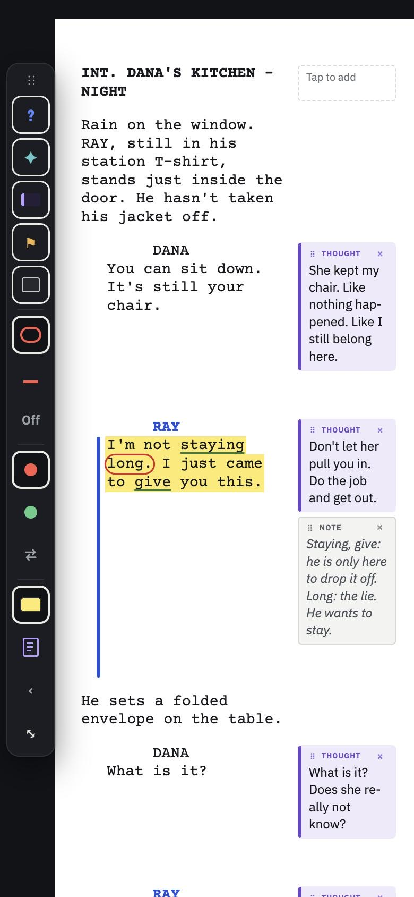
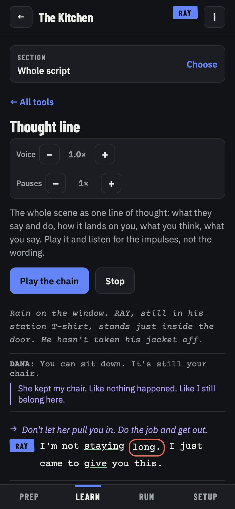
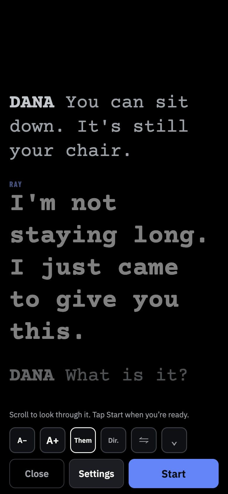

Find the thought.
The words follow.
Thoughtline gives you tools to work through a scene creatively, your own way. You do your prep right on the script page. Then everything you learn and run is built from that work, so your lines come out alive, not memorised.
Free while in beta (iPhone, via Apple's TestFlight). At launch: $19.99 once, no subscription.

Your prep is what you learn from
Each kind of note has its own place because the app uses it later. Nothing is analysed for you. It's your interpretation, in your words.
What you need to figure out about the scene, with an answer field for each.
Who, where, when, what just happened. A free-writing pad beside the script.
What's going through your head on each line, yours and theirs.
The pictures in your mind: the place, the memory, what's really going on.
The beats that have to land, and how you'll rehearse each one.
Mark the words that carry the line.
Learn it through the inner life
Most line apps drill the words. Thoughtline plays your own work back to you, so you learn the logic of the scene and the words have somewhere to hang.
- Thought line plays the chain you built: their line, your thought, then your line.
- Imagine reads the images you wrote, woven through the scene, with your eyes closed.
- Build it up teaches one line at a time, then joins it to the lines before. You can hear it and say it back, or say it and hear if you were right.
- Fade out, Key words and a memory palace give you more ways in, built on the words you marked.

Hands off the phone
It listens
Voices read the other parts. The app hears when you finish and comes in on cue, even if you paraphrase. Say "Line" for a prompt.
Even locked
Runs and Listen keep going with the phone in your pocket, on a walk or a commute, with headphone controls.
It shows you what to fix
After each run you see exactly what you missed. Trouble spots take you back to the notes under the line, because the fix is usually there.
Voices that act
Free iPhone voices for every part, or optional studio voices that follow the direction: whispering, wryly, furious.

Tape with a reader who isn't in the room
Filming on another camera? Set your phone beside the lens as a teleprompter. Send your reader a code or link, and they read the other parts from any phone or laptop, with nothing to install. Your words move along as they scroll.
Or self-tape on the phone
Your lines sit just under the lens. The built-in reader plays softer than you, so casting hears you and not the reader. Add a slate, record, trim your best take, and share it or save it to Photos.
Pay once. Your scripts stay on your phone.
Every tool, on about 5 pages of any script.
Once, no subscription. Any length of script, on your iPhone and iPad.
$0.99 per audition, $2.99 per script, or $4.99 a month. For ages 18 and over.
No ads. No tracking. Your scripts, notes and recordings are never used to train AI. See the privacy policy.
Try it now
Thoughtline is in beta. Testers get every feature for free. Open this on your iPhone, install Apple's TestFlight app, then Thoughtline.